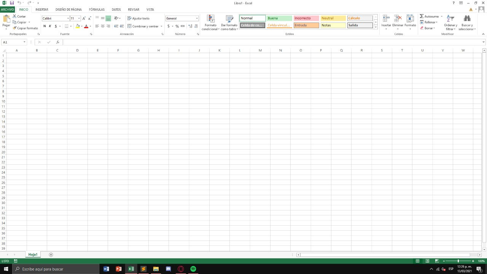

¿Que es excel?
Excel hace parte de una de las herramientas de ofimatica, es una hoja de calculo, la cual cuenta con una gran y demasiado extensa variedad de herramientas de calculo para hacer literalmente cualquier cosa que necesites relacionada con tema de calculos.
¿Para que sirve excel?
Excel es caracterizado por los demas programas de ofimatica, como word, y powerpoint, por presentarnos varias opciones de calculo y organizar nuestras cuentas personales de forma dinamica, y con pocos limites pues estas podres realizar calculos aritmeticos, basicos, o de mayor complejidad; Entre todo esto se ve incluido la parte estadistcia, icluyendo en esta tablas dinamicas, gracifos, y entre otros.
La función más importante de Excel es la creación de hojas de cálculo que tienen la función de ordenar y calcular, de forma automatizada mediante la introducción de fórmulas, grandes cantidades de números o ítems. Debido a lo anterior, Excel también se ha convertido en una herramienta para la construcción de base de datos. Las nuevas versiones de Excel han incluido funciones cada vez más complejas para uso profesional y empresarial como, por ejemplo, gráficos y macros.
Ejemplos